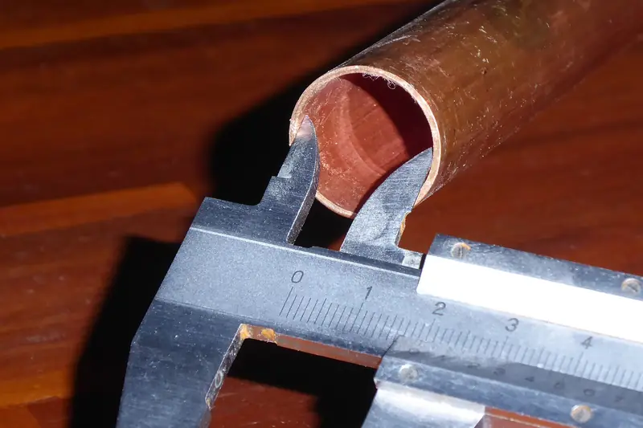

Sample Group/Sample Plant A/Product suite (concept)/Collect Edge · mobile data collection
Devices online Sample
42/ 45
Fleet across 3 lines
Readings queued offline Sample
27
Will sync when Wi-Fi returns; nothing is lost
Gauge stream, in spec Real dataset
125/ 125
Piston-ring diameters, subgroups 1–25
Legacy collector end of life Cited
Feb 28, 2022
DATAMYTE 600: Microsoft OS end of life, per DataMyte's legacy page
Live gauge stream · Bluetooth caliper Real dataset
| Subgroup-reading | Value | Result |
|---|---|---|
| 24-5 | 74.010 mm | In spec |
| 25-1 | 73.982 mm | In spec |
| 25-2 | 73.984 mm | In spec |
| 25-3 | 73.995 mm | In spec |
| 25-4 | 74.017 mm | In spec |
| 25-5 | 74.013 mm | In spec |
Readings replayed from a real dataset (Montgomery piston rings via qcc); spec 73.95–74.05 mm as in the qcc vignette. In a live system these arrive from a Bluetooth gauge over BLE.
Offline-first sync Imagined UI
1
Write locally first
Every reading goes to an on-device store with device ID and timestamp
2
Append-only sync queue
Uploads in order when the network returns; retries with backoff
3
Conflict rules
Server wins for checklist definitions; results are append-only and never overwritten


Device fleet Sample
| Device | Location | Status | Queued |
|---|---|---|---|
| Rugged Android handheld | Line 3 · Weld | Online | 0 |
| Wrist-worn Android | Line 3 · Final | Online | 0 |
| iPad (BYOD) | Receiving | Offline 14 min | 27 |
| Rugged Android handheld | Line 5 · Paint | Online | 0 |
| Windows tablet | Gauge lab | Updating app | 3 |
Sample fleet. DataMyte's Wrist Revolution page lists deployment on Android devices from several makers, and Revolution PRO lists offline data collection and Bluetooth gauging; this concept adds iOS and Windows.
Feature names from DataMyte's public pages: DATAMYTE 600 Data Collector (legacy) · Revolution PRO · Wrist Revolution. Layout, data and anything marked “Imagined UI” are a concept by chrismai.ai. Figures marked “Estimate” are model-inferred; figures marked “Real dataset” come from cited public data. See Methods · Photo and data credits.